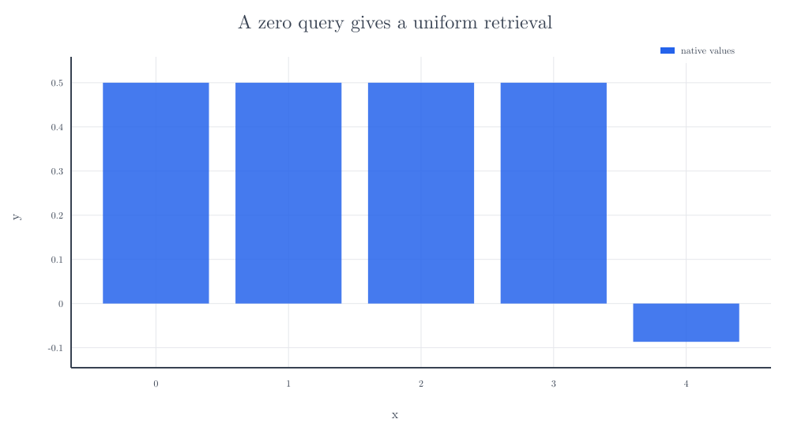
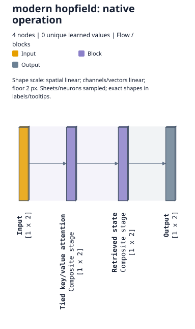
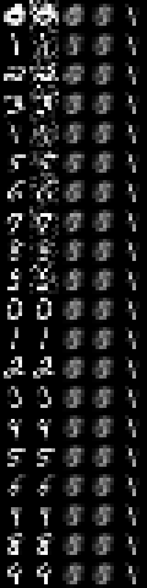
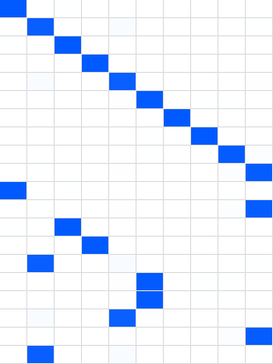
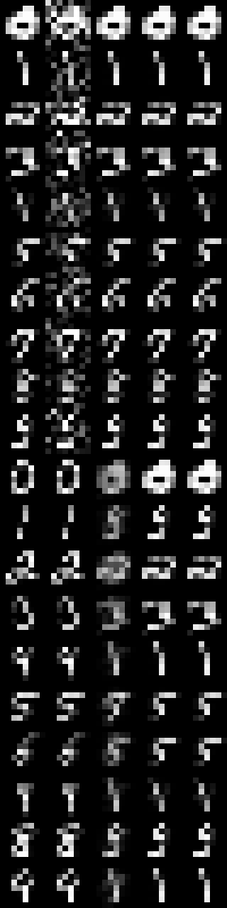
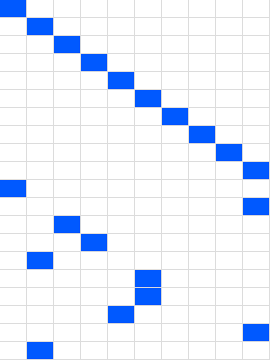
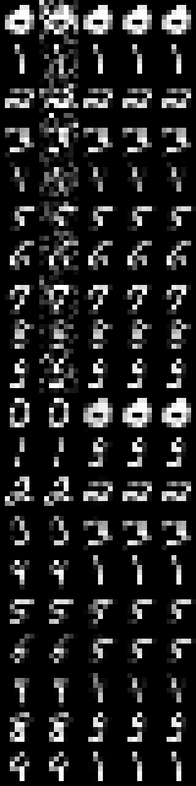
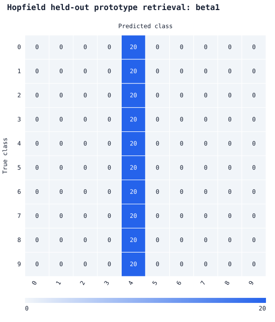
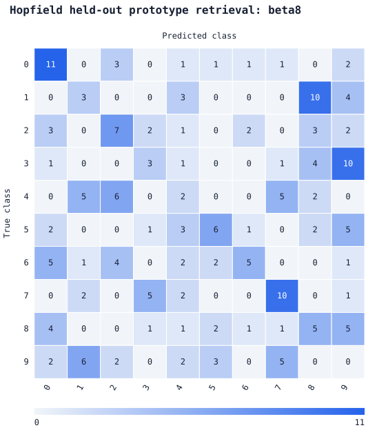
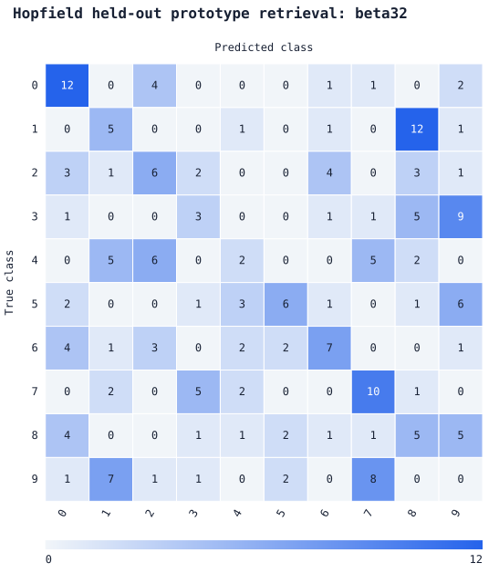

Modern Hopfield Retrieval: Attention and Energy Descent
Abstract
Native tensor graphs expose the modern hopfield experiment, with explicit inputs, derivatives and reproducible source fixtures. The complete editable program preserves the bounded source protocol and its checks.
Follow the operation
#include <dm/dm.hpp>
int main(){std::filesystem::create_directories("build");dm::graphics::Diagram d(28,1150);dm::graphics::DiagramNodeStyle s;s.width=12;s.height=5;s.font_size=26;d.node("input",{-16,0},"Ten fit-only memories\nNoisy / held-out queries",s).node("graph",{0,0},"Tied key-value attention\nEight retrieval updates",s).node("audit",{16,0},"Energy descent checks\nHeld-out retrieval",s).edge("input","graph").edge("graph","audit").save_svg("build/modern_hopfield_method.svg");}
A zero query gives a uniform retrieval
Two orthogonal memories and a zero query give equal logits. The next state is their mean(.5,.5), and the energy is minuslog2/beta. This attention operation has no trainable parameters.
#include <dm/dm.hpp>
int main(){namespace n=dm::nn;namespace m=n::models;std::filesystem::create_directories("build");auto path=m::ModernHopfield(n::zeros({1,2}),n::from_vector(std::vector<float>{1,0,0,1},{2,2}),8);auto values=n::concat({path.attention.reshape({2}),path.next.reshape({2}),path.energy},0);if(std::abs(path.energy.item()+std::log(2.)/8)>1e-8)return 1;
std::print("| coordinate | computed value |\n|---:|---:|\n");auto v=values.to_vector<double>();for(size_t i=0;i<v.size();++i)std::print("| {} | {:.9f} |\n",i,v[i]);n::save_npz("build/modern_hopfield_worked.npz",{{"values",values}});dm::graphics::RPlot::create().bars(n::arange(0,std::int64_t(v.size())).to_vector<double>(),v,"native values",{37,99,235}).title("A zero query gives a uniform retrieval").size(1000,550).save_svg("build/modern_hopfield_worked.svg");}| coordinate | computed value |
|---|---|
| 0 | 0.500000000 |
| 1 | 0.500000000 |
| 2 | 0.500000000 |
| 3 | 0.500000000 |
| 4 | -0.086643398 |

Trace an executed native operation
The block graph is traced from the actual operation below. Named stages mark its semantic endpoints; the complete program supplies the source geometry and parameter census.
#include <dm/dm.hpp>
int main(){namespace n=dm::nn;namespace m=n::models;std::filesystem::create_directories("build");auto memories=n::from_vector(std::vector<float>{1,0,0,1},{2,2});n::Module model([&](const n::Tensor& x){auto y=m::ModernHopfield(x,memories,8);n::model_stage("Tied key/value attention",x,y.attention);return n::model_stage("Retrieved state",y.attention,y.next);},"modern hopfield: native operation");n::ModelPlotOptions o;o.detail=n::ModelPlotDetail::Blocks;o.sizing.minimum_extent=2;o.sizing.max_planes=2;model.plot(n::zeros({1,2}),o).save_svg("build/modern_hopfield_network.svg");}
Complete preserved experiment
All mathematical components run natively. Optional TensorFlow recordings are absent; their comparisons are skipped rather than asserted. The source random seeds, parameter names and fixed three-epoch budgets remain visible. Diagnostics without fitting use their original fixed inputs. This is a teaching experiment, not a benchmark parity claim.
#include <dm/dm.hpp>
// CMD: just run-nn modern_hopfield
// Training-free continuous Hopfield retrieval using FIT-only MNIST memories and
// actual energy derivatives.
//
// Port of tflow's modern_hopfield (common/{nn,ml}/modern_hopfield.h ->
// examples/nn/common/modern_hopfield.hpp). Data: tflow's saliency MNIST pools
// (paths::Dataset("saliency"), `just autoencoder-assets` in tflow_examples; 1000 fit
// / 200 validation / 200 test), half-pixel bilinear 28 -> 8 gray. FIT-only 64-pixel
// mean; every vector centered and L2-normalized. The first fit image of each class
// gives the 10 stored unit-norm patterns. Queries: 100 noisy copies (10 per memory,
// + .15 N(0, 1) per coordinate from tflow's Gaussian bank 24001, no renormalization)
// and 200 heldout test images. Retrieval x' = softmax(beta x M^T) M is
// nn::scaled_dot_product_attention(x, M, M, scale = beta); 8 updates at beta 1, 8, 32.
// No trainable parameters, no training.
//
// Checks (as tflow): energy gradient == x - x' (actual autograd derivative) at every
// update; energy never increases (f32); zero query -> uniform attention; memory
// permutation preserves retrieval; fixed inputs repeat bit-exactly; single-row batch
// parity; memory/query bytes immutable; complete records. TF parity: data (gray
// pools, memories, noise, queries) checked bit-identical to tflow's
// output/models/modern_hopfield/data.npz; trajectories, probes (full Jacobians) and
// metrics.tsv compared with TF's record. Deviations: no independent_audit.json.
// Options: data=DIR out=DIR tf=DIR threads=4. Output: output/nn/models/modern_hopfield.
// Editable experiment support: modern_hopfield.hpp
// Port of tflow's common/nn/modern_hopfield.h and common/ml/modern_hopfield.h:
// continuous modern Hopfield energy E(x) = .5 ||x||^2 - logsumexp(beta x M^T) / beta
// and the tied key/value retrieval x' = softmax(beta x M^T) M (no learned
// projections, no training), with actual energy derivatives w.r.t. state and
// memory and the full 64x64 retrieval Jacobian.
//
// tflow -> datamunge: the retrieval is nn::scaled_dot_product_attention(x, M, M)
// with scale = beta (plain path, weights returned); AddSymbolicGradients -> nn::grad.
// Editable experiment support: binary_energy_data.hpp
// Shared support for the 3.5 energy-based model ports (restricted_boltzmann,
// deep_belief, deep_boltzmann, energy_langevin, modern_hopfield): a port of
// tflow's common/ml/binary_energy_data.h (synthetic single-bar corpus, explicit
// mt19937 uniform banks, 12-pixel binary tiles) plus the program helpers those
// examples repeat (option parsing, .npz records, TF record comparison).
//
// Every random draw of these examples is an explicit uniform/Gaussian bank from
// std::mt19937(seed), so the ports reproduce tflow's data, Gibbs uniforms and
// Langevin innovations bit for bit; only the weight initialisation differs
// (nn's generator), which init=auto removes by replaying TF's initial arrays.
// Editable experiment support: binary_pixels.hpp
// Shared harness of the binary 8x8 MNIST autoregressive density ports
// (pixel_cnn, gated_pixel_cnn, made_density, pixel_rnn): the program body that
// tflow repeats in each of those .cc files, plus the model-independent part of
// tflow's common/ml/{pixel_cnn,gated_pixel_cnn,made_density,pixel_rnn}.h
// (teacher-forced Bernoulli likelihood, causal logit/input Jacobian, prefix-only
// ancestral sampling with MT19937 uniforms).
//
// Data: the 1000/200/200 MNIST pools of tflow's saliency assets (ae::LoadSaliency),
// half-pixel bilinear 28 -> 8 in double then float32 threshold >= .5, as tflow.
//
// tflow -> datamunge: session graphs -> eager calls, AddSymbolicGradients ->
// nn::grad, Adam train_op -> nn::Optimizer (Adam .003), SaveV2 -> final.npz.
// TF parity: init=auto (default) replays TF's recorded initial_arrays.npz from
// tflow's output/models/<name>[/<variant>] so the whole run follows TF's; every
// record is then compared with TF's and the replayed first-step records must
// match. Independently of the trajectory, TF's FINAL weights (model_arrays.npz)
// are loaded into a fresh model which must reproduce TF's test outputs.
// Editable experiment support: autoencoder.hpp
// Shared support for the autoencoder ports: a port of the parts of tflow's
// common/ml/{autoencoder,convolutional_autoencoder,variational_autoencoder,
// saliency}.h and common/nn/{convolutional_autoencoder,variational_autoencoder,
// smoothgrad}.h that convolutional_autoencoder and variational_autoencoder use.
//
// Data: the balanced 1000 fit / 200 validation / 200 test MNIST pools of
// $DATAMUNGE_DATA_DIR/saliency/saliency_data.npz (tflow's `just
// autoencoder-assets`). Checkpoints are .npz files of the parameter store
// instead of TF SaveV2 bundles. Parameter initialisation uses datamunge's
// generator, so trajectories match tflow only statistically; batch orders and
// Gaussian noise banks are bit-identical to tflow's.
// Editable experiment support: checks.hpp
// Small runtime checks used by the executable nn examples. They stay on in
// Release builds and make the example exit nonzero on failure, so `just
// run-all-nn` doubles as a regression test against the recorded TF numbers.
// Editable experiment support: runtime.hpp
// Bounded demonstrations by default; opt into convergence experiments explicitly.
namespace example_runtime {
inline bool Full() {
const char* value = std::getenv("DATAMUNGE_EXAMPLES_FULL");
return value && std::string(value) == "1";
}
template <typename T> T Limit(T requested, T quick_limit) {
return Full() ? requested : std::min(requested, quick_limit);
}
inline void Describe() {
if (!Full())
std::cout << "Quick demonstration: bounded training; convergence metrics require "
"DATAMUNGE_EXAMPLES_FULL=1.\n";
}
} // namespace example_runtime
namespace check {
inline void Require(bool condition, const std::string& message) {
if (!condition) throw std::runtime_error(message);
}
// A short demonstration checks execution, derivatives and persistence; reaching
// a published accuracy/return requires the separately requested full schedule.
inline void TrainingQuality(bool condition, const std::string& message) {
if (example_runtime::Full()) Require(condition, message);
else std::cout << " full-training quality check deferred: " << message << '\n';
}
inline void Near(double actual, double expected, double tolerance, const std::string& message) {
if (!std::isfinite(actual) || !std::isfinite(expected) || std::abs(actual - expected) > tolerance)
throw std::runtime_error(message + ": got " + std::to_string(actual) + ", expected " + std::to_string(expected));
}
/// Expects `f` to throw; returns the message.
template <typename F>
std::string Throws(F&& f, const std::string& message) {
try {
f();
} catch (const std::exception& e) {
return e.what();
}
throw std::runtime_error(message + ": expected an exception");
}
} // namespace check
inline void Header(const std::string& title) {
const std::size_t pad = title.size() < 60 ? 60 - title.size() : 0;
std::cout << "\n== " << title << " " << std::string(pad, '=') << "\n";
}
// Editable experiment support: paths.hpp
// Where the nn example ports read datasets and write their outputs.
//
// Datasets: $DATAMUNGE_DATA_DIR, or the user's cache. Public datasets are
// prepared by the example data loaders when first needed.
// Outputs (checkpoints, histories, fixtures): $DATAMUNGE_OUTPUT_DIR, or
// output/nn relative to the working directory (`just run-nn` runs from the
// repository root). Both are created on demand by the caller.
// Editable experiment support: dataset_assets.hpp
namespace dataset_assets {
inline std::string DataRoot(){return dm::datasets::data_home();}
inline void EnsureSaliency(const std::string& directory){dm::datasets::prepare_example_data("mnist-assets",std::filesystem::path(directory).parent_path().string());}
inline dm::nn::ImageDataset LoadCifar10(const std::string& directory,const std::string& split){dm::datasets::fetch("cifar10",directory);return dm::nn::load_cifar10(directory,split);}
}
namespace paths {
inline std::filesystem::path DataRoot() {
return dm::datasets::data_home();
}
/// DataRoot() / name, e.g. Dataset("mnist").
inline std::filesystem::path Dataset(const std::string& name) { return DataRoot() / name; }
inline std::filesystem::path OutputRoot() {
return std::filesystem::absolute("build/generative-models");
}
/// OutputRoot() / relative, created as a directory.
inline std::filesystem::path OutputDir(const std::string& relative) {
auto dir = OutputRoot() / relative;
std::filesystem::create_directories(dir);
return dir;
}
} // namespace paths
namespace ae {
namespace nn = datamunge::nn;
// ---- data ----------------------------------------------------------------------------
using SaliencyData=datamunge::nn::models::SaliencyData;
inline SaliencyData Rows(const SaliencyData& d, const std::vector<std::int64_t>& rows) {
return {nn::take_rows(d.images, rows), nn::take_rows(d.labels, rows), nn::take_rows(d.source, rows)};
}
inline nn::Tensor Find(const nn::NamedTensors& arrays, const std::string& name) {
for (const auto& [key, value] : arrays)
if (key == name) return value;
throw std::runtime_error("missing array " + name);
}
/// The fit, validation and test pools with tflow's integrity checks.
inline std::vector<SaliencyData> LoadSaliency(const std::filesystem::path&root){dataset_assets::EnsureSaliency(root.string());return nn::models::LoadSaliency(root);}
/// Copies tflow's provenance files next to the outputs when they exist.
inline void CopyManifests(const std::filesystem::path& data, const std::filesystem::path& root) {
const auto opts = std::filesystem::copy_options::overwrite_existing;
if (std::filesystem::exists(data / "manifest.json"))
std::filesystem::copy_file(data / "manifest.json", root / "data_manifest.json", opts);
const auto source = paths::Dataset("autoencoder") / "source_manifest.json";
if (std::filesystem::exists(source)) std::filesystem::copy_file(source, root / "source_manifest.json", opts);
}
inline nn::Tensor GaussianNoise(const nn::Shape& shape,std::int64_t samples,std::uint32_t seed){return nn::models::GaussianNoise(shape,samples,seed); }
}
// Editable experiment support: tf_replay.hpp
// Small helpers the 4.2 sequence-task ports share for working with tflow's
// recorded runs: named-array maps (tflow's `std::map<std::string, tf::Tensor>`
// batches), row selection, exact/approximate comparisons, loading TF's
// initial_arrays.npz into a ParameterStore and reading history.tsv columns.
//
// A tflow run directory (tflow's output/models/<name>) holds initial_arrays.npz,
// first_batch.npz, initial_gradients.npz, history.tsv and model_arrays.npz.
// Replaying the run from TF's own initial weights with the same batch order
// (nn::BatchOrder reproduces tflow's) and the same optimizer checks the port
// numerically, independently of the random initialisation.
namespace replay {
namespace nn = datamunge::nn;
using nn::Tensor;
using Map = std::map<std::string, Tensor>;
/// tflow's recorded output directory for an example (its output/models/<name>).
inline std::filesystem::path TfModels(const std::string& name) {
return paths::DataRoot().parent_path() / "models" / name;
}
inline Tensor Get(const nn::NamedTensors& arrays, const std::string& key) {
for (const auto& [name, t] : arrays)
if (name == key) return t;
throw std::runtime_error("missing array " + key);
}
inline Map ToMap(const nn::NamedTensors& arrays) { return {arrays.begin(), arrays.end()}; }
inline nn::NamedTensors ToNamed(const Map& m) { return {m.begin(), m.end()}; }
/// Rows `rows` (axis 0) of every array.
inline Map Rows(const Map& m, const std::vector<std::int64_t>& rows) {
Map out;
for (const auto& [k, v] : m) out[k] = nn::take_rows(v, rows);
return out;
}
/// {key: arrays["<split>_<key>"]} for each key.
inline Map Split(const nn::NamedTensors& arrays, const std::string& split, const std::vector<std::string>& keys) {
Map out;
for (const auto& k : keys) out[k] = Get(arrays, split + "_" + k);
return out;
}
inline double MaxAbsDiff(const Tensor& a, const Tensor& b) {
const auto x = a.to_vector<double>(), y = b.to_vector<double>();
check::Require(x.size() == y.size(), "compared tensors have the same size");
double m = 0;
for (std::size_t i = 0; i < x.size(); ++i) m = std::max(m, std::abs(x[i] - y[i]));
return m;
}
/// Bit-identical values (dtype and shape included).
inline bool SameBits(const Tensor& a, const Tensor& b) {
if (a.dtype() != b.dtype() || a.shape() != b.shape()) return false;
auto same = [](const auto& x, const auto& y) {
return x.size() == y.size() && (x.empty() || std::memcmp(x.data(), y.data(), x.size() * sizeof(x[0])) == 0);
};
switch (a.dtype()) {
case nn::DType::Float32: return same(a.to_vector<float>(), b.to_vector<float>());
case nn::DType::Float64: return same(a.to_vector<double>(), b.to_vector<double>());
case nn::DType::Int32: return same(a.to_vector<std::int32_t>(), b.to_vector<std::int32_t>());
default: return same(a.to_vector<std::int64_t>(), b.to_vector<std::int64_t>());
}
}
inline bool SameBits(const Map& a, const Map& b) {
if (a.size() != b.size()) return false;
for (const auto& [k, v] : a)
if (!b.count(k) || !SameBits(v, b.at(k))) return false;
return true;
}
/// Copies of every parameter, by name.
inline Map Arrays(const nn::ParameterStore& p) {
Map out;
for (const auto& name : p.names()) out[name] = p.at(name).detach().clone();
return out;
}
/// Gradients aligned with p.names(), by name.
inline Map Named(const nn::ParameterStore& p, const std::vector<Tensor>& g) {
Map out;
for (std::size_t i = 0; i < g.size(); ++i) out[p.names()[i]] = g[i].defined() ? g[i].detach() : nn::zeros_like(p.parameters()[i]).detach();
return out;
}
/// Overwrites every parameter of `p` from an .npz (e.g. TF's initial_arrays.npz),
/// which must hold exactly p's names.
inline void LoadInto(nn::ParameterStore& p, const std::filesystem::path& file) {
const auto arrays = nn::load_npz(file.string());
check::Require(arrays.size() == p.size(), "array file covers exactly the model's parameters: " + file.string());
for (const auto& [name, value] : arrays) {
check::Require(p.contains(name), "array " + name + " is a model parameter");
p.set(name, nn::cast(value, p.at(name).dtype()));
}
}
/// max |a[k] - b[k]| over the keys of `a` (all must exist in `b`).
inline double MaxDiff(const Map& a, const Map& b) {
double m = 0;
for (const auto& [k, v] : a) {
check::Require(b.count(k) > 0, "reference has array " + k);
m = std::max(m, MaxAbsDiff(v, b.at(k)));
}
return m;
}
inline double MaxDiff(const Map& a, const std::filesystem::path& file) { return MaxDiff(a, ToMap(nn::load_npz(file.string()))); }
/// Column `column` (0-based) of a tab-separated history file with a header line.
inline std::vector<double> History(const std::filesystem::path& file, int column = 1) {
std::ifstream in(file);
std::string line;
std::vector<double> out;
std::getline(in, line);
while (std::getline(in, line)) {
std::stringstream ss(line);
std::string cell;
for (int c = 0; c <= column && std::getline(ss, cell, '\t'); ++c)
if (c == column) out.push_back(std::stod(cell));
}
return out;
}
inline nn::OptimizerConfig Adam() {
nn::OptimizerConfig c;
c.kind = nn::OptimizerKind::Adam;
return c;
}
/// Copies `files` from `from` to `to` when present.
inline void CopyAssets(const std::filesystem::path& from, const std::filesystem::path& to,
const std::vector<std::string>& files) {
for (const auto& f : files)
if (std::filesystem::exists(from / f))
std::filesystem::copy_file(from / f, to / f, std::filesystem::copy_options::overwrite_existing);
}
} // namespace replay
namespace bpix {
namespace nn = datamunge::nn;
namespace fs = std::filesystem;
using nn::Tensor;
using Map = replay::Map;
// ---- small helpers -----------------------------------------------------------------------------
inline Tensor Floats(const std::vector<float>& v, const nn::Shape& s) {
return nn::from_vector(v, s);
}
/// tflow's Png: every 8x8 image as a 64x64 tile (8x nearest), `columns` per row,
/// gray 220 background, floor(v * 255 + .5); `rgb` images use (v + 1) * 127.5
/// with clamping when `signed_range`, else 255 clamp(v, 0, 1).
inline void Png(const fs::path& path, const Tensor& images, int columns, int mode = 0) {
const auto n = images.size(0), c = images.size(3);
const auto v = images.contiguous().to_vector<float>();
const std::int64_t rows = (n + columns - 1) / columns, H = rows * 64, W = columns * 64;
std::vector<float> out(static_cast<std::size_t>(H * W * 3), 220.f);
for (std::int64_t b = 0; b < n; ++b)
for (int y = 0; y < 64; ++y)
for (int x = 0; x < 64; ++x)
for (int k = 0; k < 3; ++k) {
const double value =
v[static_cast<std::size_t>(((b * 8 + y / 8) * 8 + x / 8) * c + (c == 1 ? 0 : k))];
double byte = mode == 0 ? std::floor(value * 255 + .5)
: mode == 1 ? std::floor(std::clamp((value + 1) * 127.5, 0., 255.) + .5)
: std::floor(255 * std::clamp(value, 0., 1.) + .5);
out[static_cast<std::size_t>(
((b / columns * 64 + y) * W + b % columns * 64 + x) * 3 + k)] = float(byte);
}
nn::save_png(Floats(out, {H, W, 3}), path.string(), 0, 255);
}
/// Writes a [H, W, 3] uint8-valued byte image.
inline void
PngBytes(const fs::path& path, const std::vector<float>& bytes, std::int64_t h, std::int64_t w) {
nn::save_png(Floats(bytes, {h, w, 3}), path.string(), 0, 255);
}
inline void RequireFinite(const Map& m, const std::string& what) {
for (const auto& [k, v] : m)
if (v.dtype() == nn::DType::Float32)
for (float x : v.contiguous().to_vector<float>())
check::Require(std::isfinite(x), what);
}
inline std::string Bits(const Tensor& t) {
const auto c = t.contiguous();
switch (c.dtype()) {
case nn::DType::Float32: {
const auto v = c.to_vector<float>();
return {reinterpret_cast<const char*>(v.data()), v.size() * sizeof(float)};
}
case nn::DType::Float64: {
const auto v = c.to_vector<double>();
return {reinterpret_cast<const char*>(v.data()), v.size() * sizeof(double)};
}
default: {
const auto v = c.to_vector<std::int32_t>();
return {reinterpret_cast<const char*>(v.data()), v.size() * sizeof(std::int32_t)};
}
}
}
inline bool SameBits(const Map& a, const Map& b) {
if (a.size() != b.size())
return false;
for (const auto& [k, v] : a)
if (!b.count(k) || Bits(v) != Bits(b.at(k)) || v.shape() != b.at(k).shape())
return false;
return true;
}
// ---- options ----------------------------------------------------------------------------------
struct Options {
int epochs = 3, threads = 4;
fs::path data = paths::Dataset("saliency"), out, tf;
std::string init = "auto";
bool verbose = false;
};
/// epochs=N data=DIR out=DIR init=auto|tf|nn|PATH tf=DIR threads=N verbose=0|1
inline Options ParseOptions(int argc, char** argv, const std::string& name, const fs::path& data) {
Options o;
o.data = data;
o.tf = replay::TfModels(name);
for (int i = 1; i < argc; ++i) {
const std::string a = argv[i];
const auto e = a.find('=');
check::Require(
e != std::string::npos,
"expected key=value (epochs= data= out= init= tf= threads= verbose=)");
const std::string k = a.substr(0, e), v = a.substr(e + 1);
if (k == "epochs")
o.epochs = std::stoi(v);
else if (k == "data")
o.data = v;
else if (k == "out")
o.out = v;
else if (k == "init")
o.init = v;
else if (k == "tf")
o.tf = v;
else if (k == "threads")
o.threads = std::stoi(v);
else if (k == "verbose")
o.verbose = v != "0";
else
throw std::invalid_argument(
"epochs=N data=PATH out=PATH init=auto|tf|nn|PATH tf=DIR threads=N verbose=0|1");
}
check::Require(
o.epochs > 0 && o.epochs <= 100, "three cheap default epochs or explicit 1..100 override");
if (o.out.empty())
o.out = paths::OutputRoot() / "models" / name;
fs::create_directories(o.out);
if (o.threads > 0)
nn::set_num_threads(o.threads);
return o;
}
/// The initial arrays to replay (empty: nn's generator). `tf` is the TF run directory.
inline fs::path InitFile(const std::string& init, const fs::path& tf) {
if (init == "nn")
return {};
if (init == "auto" || init == "tf") {
const auto f = tf / "initial_arrays.npz";
if (init == "tf")
check::Require(fs::exists(f), "init=tf needs " + f.string());
return fs::exists(f) ? f : fs::path();
}
check::Require(fs::exists(init), "init file " + init + " missing");
return init;
}
/// Max |ours - TF| over the arrays both records share (-1 when TF's file is missing);
/// `relative`: max |ours - TF| / (1 + |TF|).
inline double Compare(
const fs::path& tf,
const std::string& file,
const Map& ours,
bool verbose = false,
bool relative = false) {
if (!fs::exists(tf / file)) {
std::printf(" vs TF %-28s (no TF record)\n", file.c_str());
return -1;
}
const auto theirs = replay::ToMap(nn::load_npz((tf / file).string()));
double m = 0;
int shared = 0;
for (const auto& [k, v] : ours) {
if (!theirs.count(k) || theirs.at(k).numel() != v.numel())
continue;
const auto x = nn::cast(v, nn::DType::Float64).to_vector<double>(),
y = nn::cast(theirs.at(k), nn::DType::Float64).to_vector<double>();
double d = 0;
for (std::size_t i = 0; i < x.size(); ++i)
d = std::max(d, std::abs(x[i] - y[i]) / (relative ? 1 + std::abs(y[i]) : 1.));
if (verbose)
std::printf(" %-24s %.3g\n", k.c_str(), d);
m = std::max(m, d);
++shared;
}
std::printf(
" vs TF %-28s max |ours - TF|%s = %.3g (%d arrays)\n",
file.c_str(),
relative ? "/(1+|TF|)" : "",
m,
shared);
return m;
}
/// Fraction of equal elements of `key` in ours vs TF's record.
inline double
Agreement(const fs::path& tf, const std::string& file, const Map& ours, const std::string& key) {
if (!fs::exists(tf / file))
return -1;
const auto theirs = replay::ToMap(nn::load_npz((tf / file).string()));
if (!theirs.count(key))
return -1;
const auto a = nn::cast(ours.at(key), nn::DType::Float64).to_vector<double>();
const auto b = nn::cast(theirs.at(key), nn::DType::Float64).to_vector<double>();
if (a.size() != b.size())
return -1;
std::size_t same = 0;
for (std::size_t i = 0; i < a.size(); ++i)
same += a[i] == b[i];
return double(same) / double(a.size());
}
// ---- data -------------------------------------------------------------------------------------
/// tflow's half-pixel bilinear 28 -> 8 resize (double accumulation, float result).
inline Tensor Resize8(const Tensor& images) {
return nn::models::BigGanResize8(images);
}
}
namespace ebm {
namespace nn = datamunge::nn;
namespace fs = std::filesystem;
using nn::Tensor;
using Map = replay::Map;
// ---- random banks and data -------------------------------------------------------------
/// tflow's ml::BinaryUniform: (mt19937() + .5) / 2^32 as [n, dimensions] float32 (float64 when wide).
inline Tensor BinaryUniform(std::int64_t n, std::int64_t dimensions, std::uint32_t seed, bool wide = false) {
return nn::MidpointUniform(n,dimensions,seed,wide?nn::DType::Float64:nn::DType::Float32);
}
/// tflow's nn::GaussianNoise bank [n, dimensions] (float32, or float64 when wide).
inline Tensor Gaussian(std::int64_t n, std::uint32_t seed, bool wide = false, std::int64_t dimensions = 2) {
const Tensor raw = nn::reshape(ae::GaussianNoise({n, dimensions}, 1, seed), {n, dimensions});
return wide ? raw : nn::cast(raw, nn::DType::Float32);
}
inline Tensor Ints(const std::vector<std::int32_t>& v) { return nn::from_vector(v, {std::int64_t(v.size())}); }
/// tflow's ml::BinaryBars: uniformly one of 4 vertical / 2 horizontal bars of a 2x4
/// grid, each bit flipped with probability .05. Keys points/uniform/components/source_ids.
inline Map BinaryBars(std::int64_t n, std::uint32_t seed, int offset) {
auto x=nn::models::BinaryBars(n,seed,offset);return {{"points",x.points},{"uniform",x.uniforms},{"components",x.components},{"source_ids",x.source_ids}};
}
/// tflow's nn::RbmBinaryStates: all 2^bits binary rows, bit j of row b = (b >> j) & 1.
inline Tensor BinaryStates(int bits) {
return nn::models::BinaryStates(bits);
}
/// tflow's ml::BinaryTiles: every row of `values` [n, bits] as a (bits / width) x width
/// grid of 12-pixel cells, `columns` tiles per row, 4-pixel gray-220 gutters.
inline void BinaryTiles(const fs::path& path, const Tensor& values, int columns, int width = 4) {
const auto n = values.size(0), bits = values.size(1);
check::Require(bits % width == 0, "binary tiles rectangular");
const std::int64_t height = bits / width, px = width * 12 + 4, py = height * 12 + 4;
const std::int64_t H = ((n + columns - 1) / columns) * py, W = columns * px;
const auto v = values.contiguous().to_vector<float>();
std::vector<float> rgb(static_cast<std::size_t>(H * W * 3), 220.f);
for (std::int64_t b = 0; b < n; ++b)
for (std::int64_t y = 0; y < height * 12; ++y)
for (std::int64_t x = 0; x < width * 12; ++x) {
const double p = v[static_cast<std::size_t>(b * bits + (y / 12) * width + x / 12)];
check::Require(std::isfinite(p) && p >= 0 && p <= 1, "binary tiles probabilities");
for (int c = 0; c < 3; ++c)
rgb[static_cast<std::size_t>(((b / columns * py + y) * W + b % columns * px + x) * 3 + c)] = float(std::floor(p * 255 + .5));
}
bpix::PngBytes(path, rgb, H, W);
}
// ---- records -----------------------------------------------------------------------------
inline Tensor Rows(const Tensor& x, const std::vector<std::int64_t>& rows) { return nn::take_rows(x, rows); }
inline std::vector<std::int64_t> Range(std::int64_t n) {
std::vector<std::int64_t> r(static_cast<std::size_t>(n));
for (std::int64_t i = 0; i < n; ++i) r[i] = i;
return r;
}
inline void Save(const fs::path& file, const Map& m) { nn::save_npz(file.string(), replay::ToNamed(m)); }
inline Map Load(const fs::path& file) { return replay::ToMap(nn::load_npz(file.string())); }
inline std::string Bits(const Tensor& t) { return bpix::Bits(t); }
inline double Scalar(const Map& m, const std::string& k) { return nn::cast(m.at(k), nn::DType::Float64).item<double>(); }
inline Map Detached(const Map& m) {
Map out;
for (const auto& [k, v] : m) out[k] = v.detach();
return out;
}
inline std::vector<std::string> Snapshot(const Map& arrays) {
std::vector<std::string> out;
for (const auto& [k, v] : arrays) out.push_back(Bits(v));
return out;
}
/// Bit-identical copies of every array of `ours` in TF's record `file` (missing file: true).
inline bool SameAsTf(const fs::path& tf, const std::string& file, const Map& ours) {
if (!fs::exists(tf / file)) return true;
const auto theirs = Load(tf / file);
for (const auto& [k, v] : ours)
if (!theirs.count(k) || Bits(theirs.at(k)) != Bits(v) || theirs.at(k).shape() != v.shape()) return false;
return true;
}
/// Fraction of equal elements over the shared keys of `file` (all, or only `keys`;
/// -1 without a TF record). Used for sampled binary states.
inline double Agreement(const fs::path& tf, const std::string& file, const Map& ours, const std::vector<std::string>& keys = {}) {
if (!fs::exists(tf / file)) return -1;
const auto theirs = Load(tf / file);
std::size_t same = 0, total = 0;
for (const auto& [k, v] : ours) {
if (!keys.empty() && std::find(keys.begin(), keys.end(), k) == keys.end()) continue;
if (!theirs.count(k) || theirs.at(k).numel() != v.numel()) continue;
const auto a = nn::cast(v, nn::DType::Float64).to_vector<double>(), b = nn::cast(theirs.at(k), nn::DType::Float64).to_vector<double>();
for (std::size_t i = 0; i < a.size(); ++i) same += a[i] == b[i];
total += a.size();
}
return total ? double(same) / double(total) : -1;
}
inline nn::OptimizerConfig Sgd() { return {}; }
inline nn::OptimizerConfig Adam() {
nn::OptimizerConfig c;
c.kind = nn::OptimizerKind::Adam;
return c;
}
/// Gradients of `loss` w.r.t. every parameter of `p`, by name.
inline Map ParameterGradients(const nn::ParameterStore& p, const Tensor& loss) {
return replay::Named(p, nn::grad(loss, p.parameters()));
}
/// Overwrites the parameters of `p` from `arrays` (names `prefix + name`).
inline void SetFrom(nn::ParameterStore& p, const Map& arrays, const std::string& prefix = "") {
for (const auto& name : p.names()) {
check::Require(arrays.count(prefix + name) > 0, "array " + prefix + name + " present");
p.set(name, nn::cast(arrays.at(prefix + name), p.at(name).dtype()));
}
}
/// Finds a frozen checkpoint in `dir`: final.npz (our ports) or model_arrays.npz (TF's restored weights).
inline fs::path FrozenFile(const fs::path& dir) {
if (fs::exists(dir / "final.npz")) return dir / "final.npz";
if (fs::exists(dir / "model_arrays.npz")) return dir / "model_arrays.npz";
return {};
}
/// "ours" (our port's output), "tf" (tflow's recorded run), "auto" (ours when present, else TF) or a directory.
inline fs::path FrozenDir(const std::string& choice, const fs::path& ours, const fs::path& tf) {
if (choice == "ours") return ours;
if (choice == "tf") return tf;
if (choice == "auto") return FrozenFile(ours).empty() ? tf : ours;
return choice;
}
// ---- options -----------------------------------------------------------------------------
struct Options {
int epochs = 3, threads = 4;
fs::path out, tf;
std::string init = "auto";
std::map<std::string, std::string> extra; // source= / data=
};
/// key=value options: epochs out init tf threads + `extra` (name -> default).
inline Options ParseOptions(int argc, char** argv, const std::string& name, const std::map<std::string, std::string>& extra,
const std::string& usage) {
Options o;
o.tf = replay::TfModels(name);
o.extra = extra;
for (int i = 1; i < argc; ++i) {
const std::string a = argv[i];
const auto e = a.find('=');
if (e == std::string::npos) throw std::invalid_argument(usage);
const std::string k = a.substr(0, e), v = a.substr(e + 1);
if (k == "epochs") o.epochs = std::stoi(v);
else if (k == "out") o.out = v;
else if (k == "init") o.init = v;
else if (k == "tf") o.tf = v;
else if (k == "threads") o.threads = std::stoi(v);
else if (o.extra.count(k)) o.extra[k] = v;
else throw std::invalid_argument(usage);
}
check::Require(o.epochs > 0 && o.epochs <= 100, "three cheap default epochs or explicit 1..100 override");
if (o.out.empty()) o.out = paths::OutputRoot() / "models" / name;
fs::create_directories(o.out);
if (o.threads > 0) nn::set_num_threads(o.threads);
return o;
}
/// Bit-identity of our data record with TF's data.npz on `keys`.
inline void CheckData(const fs::path& tf, const Map& data, const std::vector<std::string>& keys) {
if (!fs::exists(tf / "data.npz")) return;
const auto theirs = Load(tf / "data.npz");
for (const auto& k : keys)
check::Require(theirs.count(k) && Bits(theirs.at(k)) == Bits(data.at(k)), "data bit-identical to TF's data.npz: " + k);
std::cout << "data: " << keys.size() << " arrays bit-identical to TF's data.npz\n";
}
/// Prints ours vs TF per epoch for history column `column`.
inline void CompareHistory(const fs::path& ours, const fs::path& tf, int column, const std::string& what) {
if (!fs::exists(tf / "history.tsv")) return;
const auto a = replay::History(ours / "history.tsv", column), b = replay::History(tf / "history.tsv", column);
for (std::size_t i = 0; i < std::min(a.size(), b.size()); ++i)
std::printf(" epoch %zu %s ours %.7f TF %.7f\n", i + 1, what.c_str(), a[i], b[i]);
}
} // namespace ebm
// Editable experiment support: restricted_boltzmann.hpp
// Port of tflow's common/nn/restricted_boltzmann.h and common/ml/restricted_boltzmann.h:
// Bernoulli RBM energy, conditionals, exact (enumerated) log partition and a
// sampled CD1 stopped-chain surrogate trained with SGD(.05).
//
// tflow -> datamunge: graph/session model -> class over a nn::ParameterStore
// (names W / visible_bias / hidden_bias as tflow, so TF's .npz arrays load
// directly); AddSymbolicGradients -> nn::grad; SaveV2 -> final.npz.
namespace ebm {
using nn::models::RbmParameters;
using nn::models::RbmHidden;
using nn::models::RbmVisible;
using nn::models::RbmFreeEnergy;
using nn::models::LogSumExp;
using nn::models::RbmLogPartition;
using nn::models::RbmGibbsPath;
using nn::models::RbmGibbs;
/// tflow's ml::RestrictedBoltzmannModel (seed 21003; 8x4 -> 44 parameters / 3 tensors).
class RestrictedBoltzmannModel {
public:
nn::ParameterStore store;
int visible, hidden;
explicit RestrictedBoltzmannModel(bool training = true, int visible_count = 8, int hidden_count = 4, std::uint64_t seed = 21003)
: store(seed), visible(visible_count), hidden(hidden_count) {
RbmParameters(store, visible, hidden);
}
Tensor Nll(const Tensor& v) {
const Tensor logp = nn::neg(nn::add(RbmFreeEnergy(store, v), RbmLogPartition(store, visible)));
return nn::neg(nn::mean(logp, {0}));
}
/// mean(F(v0) - F(stop(v1))): derivative = -(positive - negative CD statistics).
Tensor CdLoss(const Tensor& v, const Tensor& u, const Tensor& w) {
const auto path = RbmGibbs(store, v, u, w);
return nn::mean(nn::sub(RbmFreeEnergy(store, v), RbmFreeEnergy(store, nn::stop_gradient(path.visible))), {0});
}
Map Evaluate(const Tensor& v) {
nn::NoGradGuard guard;
const Tensor fe = RbmFreeEnergy(store, v), logz = RbmLogPartition(store, visible);
const Tensor logp = nn::neg(nn::add(fe, logz));
return {{"free_energy", fe}, {"log_partition", logz}, {"log_probability", logp},
{"nll", nn::neg(nn::mean(logp, {0}))}, {"hidden_probability", RbmHidden(store, v)}};
}
Map Gibbs(const Tensor& v, const Tensor& u, const Tensor& w, bool include_loss = true) {
nn::NoGradGuard guard;
const auto p = RbmGibbs(store, v, u, w);
Map out{{"hidden_probability", p.hidden_probability}, {"hidden", p.hidden},
{"visible_probability", p.visible_probability}, {"visible", p.visible},
{"negative_hidden_probability", p.negative_hidden_probability}};
if (include_loss) out["cd_surrogate"] = CdLoss(v, u, w);
return out;
}
Map Gradient(const Tensor& v, const Tensor& u, const Tensor& w, bool exact = false) {
return ParameterGradients(store, exact ? Nll(v) : CdLoss(v, u, w));
}
Map Arrays() const { return replay::Arrays(store); }
std::vector<std::string> Snapshot() const { return ebm::Snapshot(Arrays()); }
};
} // namespace ebm
namespace ebm {
using nn::models::ModernHopfieldPath;
using nn::models::ModernHopfield;
/// tflow's ml::ModernHopfieldModel: stateless; Evaluate(x [n, 64], memory [10, 64], beta).
class ModernHopfieldModel {
public:
Map Evaluate(const Tensor& x, const Tensor& stored, float beta, bool full_jacobian = false) const {
check::Require(beta > 0, "positive Hopfield inverse temperature");
const Tensor state = x.detach().clone().requires_grad_(true), memory = stored.detach().clone().requires_grad_(true);
const auto path = ModernHopfield(state, memory, beta);
nn::GradOptions keep;
keep.retain_graph = true;
const auto g = nn::grad({nn::sum(path.energy)}, {state, memory}, {}, keep);
Map out{{"logits", path.logits.detach()}, {"attention", path.attention.detach()}, {"next", path.next.detach()},
{"energy", path.energy.detach()}, {"state_gradient", g[0].detach()}, {"memory_gradient", g[1].detach()}};
if (full_jacobian) {
const auto n = x.size(0);
for (int row = 0; row < 64; ++row) {
std::vector<float> e(static_cast<std::size_t>(n * 64), 0.f);
for (std::int64_t b = 0; b < n; ++b) e[b * 64 + row] = 1.f;
out["jacobian_row" + std::to_string(row)] = nn::grad({path.next}, {state}, {nn::from_vector(e, {n, 64})}, keep)[0].detach();
}
}
return out;
}
};
} // namespace ebm
namespace {
using namespace ebm;
std::pair<Tensor, Tensor> Encode(const Tensor& x, const std::vector<double>& center) {
const auto v = x.to_vector<float>();
const auto n = x.size(0);
std::vector<float> values(v.size());
std::vector<double> norms(n);
for (std::int64_t b = 0; b < n; ++b) {
double norm = 0;
for (int j = 0; j < 64; ++j) norm += std::pow(double(v[b * 64 + j]) - center[j], 2);
norm = std::sqrt(norm);
check::Require(norm > 1e-6, "nonzero centered image norm");
norms[b] = norm;
for (int j = 0; j < 64; ++j) values[b * 64 + j] = float((double(v[b * 64 + j]) - center[j]) / norm);
}
return {nn::from_vector(values, {n, 64}), nn::from_vector(norms, {n})};
}
void Png(const fs::path& path, const Tensor& images, int columns) { bpix::Png(path, nn::reshape(images, {-1, 8, 8, 1}), columns, 2); }
void Heatmap(const fs::path& path, const Tensor& weights) {
const auto n = weights.size(0);
const auto w = weights.to_vector<float>();
std::vector<float> rgb(static_cast<std::size_t>(n * 20 * 300 * 3), 220.f);
for (std::int64_t b = 0; b < n; ++b)
for (int m = 0; m < 10; ++m) {
const double a = w[b * 10 + m], color[] = {255 * (1 - a), 255 * (1 - .65 * a), 255};
for (int y = 0; y < 19; ++y)
for (int x = 0; x < 29; ++x)
for (int c = 0; c < 3; ++c) rgb[static_cast<std::size_t>(((b * 20 + y) * 300 + m * 30 + x) * 3 + c)] = float(std::floor(color[c] + .5));
}
bpix::PngBytes(path, rgb, n * 20, 300);
}
Tensor WeightedImages(const Tensor& weights, const Tensor& gray) {
const auto n = weights.size(0);
const auto w = weights.to_vector<float>(), g = gray.to_vector<float>();
std::vector<float> out(static_cast<std::size_t>(n * 64));
for (std::int64_t b = 0; b < n; ++b)
for (int j = 0; j < 64; ++j) {
double sum = 0;
for (int m = 0; m < 10; ++m) sum += double(w[b * 10 + m]) * g[m * 64 + j];
out[b * 64 + j] = float(sum);
}
return nn::from_vector(out, {n, 64});
}
int Argmax(const std::vector<float>& a, std::int64_t b) {
int best = 0;
for (int c = 1; c < 10; ++c)
if (a[b * 10 + c] > a[b * 10 + best]) best = c;
return best;
}
void Run(const Options& o) {
const fs::path root = o.out, tf = o.tf, data_root = o.extra.at("data");
const auto pools = ae::LoadSaliency(data_root);
Map data;
std::vector<Tensor> gray;
for (int k = 0; k < 3; ++k) {
const std::string split = k == 0 ? "fit" : k == 1 ? "validation" : "test";
gray.push_back(nn::reshape(bpix::Resize8(pools[k].images), {-1, 64}));
data[split + "_original"] = pools[k].images;
data[split + "_gray"] = gray.back();
data[split + "_labels"] = pools[k].labels;
data[split + "_source_ids"] = pools[k].source;
}
ae::CopyManifests(data_root, root);
const auto fit = gray[0].to_vector<float>();
std::vector<double> center(64);
for (int j = 0; j < 64; ++j) {
double mean = 0;
for (int b = 0; b < 1000; ++b) mean += double(fit[b * 64 + j]) / 1000;
center[j] = mean;
}
const auto fit_labels = pools[0].labels.to_vector<std::int32_t>(), fit_source = pools[0].source.to_vector<std::int32_t>();
const auto test_labels = pools[2].labels.to_vector<std::int32_t>();
std::vector<std::int64_t> selected;
for (int c = 0; c < 10; ++c)
for (int b = 0; b < 1000; ++b)
if (fit_labels[b] == c) {
selected.push_back(b);
break;
}
check::Require(selected.size() == 10, "one fit memory per class");
const Tensor memory_gray = Rows(gray[0], selected);
const auto [memory, norms] = Encode(memory_gray, center);
const auto [heldout, heldout_n] = Encode(gray[2], center);
const auto raw_noise = ae::GaussianNoise({100, 64}, 1, 24001).to_vector<double>();
const auto mv = memory.to_vector<float>(), hv = heldout.to_vector<float>();
const auto nv = norms.to_vector<double>();
std::vector<float> queries(300 * 64), noisy_gray(100 * 64);
std::vector<std::int32_t> targets(300), memory_indices(10), memory_sources(10);
for (int c = 0; c < 10; ++c) memory_indices[c] = int(selected[c]), memory_sources[c] = fit_source[selected[c]];
for (int b = 0; b < 100; ++b) {
targets[b] = b / 10;
for (int j = 0; j < 64; ++j) {
queries[b * 64 + j] = float(double(mv[(b / 10) * 64 + j]) + .15 * raw_noise[b * 64 + j]);
noisy_gray[b * 64 + j] = float(center[j] + nv[b / 10] * queries[b * 64 + j]);
}
}
for (int b = 0; b < 200; ++b) {
targets[100 + b] = test_labels[b];
std::copy_n(hv.data() + b * 64, 64, queries.data() + (100 + b) * 64);
}
const Tensor queries_t = nn::from_vector(queries, {300, 64}), noisy_gray_t = nn::from_vector(noisy_gray, {100, 64});
data["fit_center"] = nn::from_vector(center, {64});
data["memory_gray"] = memory_gray;
data["memory"] = memory;
data["memory_norms"] = norms;
data["memory_fit_indices"] = Ints(memory_indices);
data["memory_source_ids"] = Ints(memory_sources);
data["heldout"] = heldout;
data["heldout_norms"] = heldout_n;
data["noise"] = nn::from_vector(raw_noise, {100, 64});
data["queries"] = queries_t;
data["noisy_gray"] = noisy_gray_t;
data["target_memory_class"] = Ints(targets);
std::vector<std::int64_t> gallery_indices, probe_indices;
for (int c = 0; c < 10; ++c) gallery_indices.push_back(c * 10), probe_indices.push_back(c * 10);
for (int c = 0; c < 10; ++c)
for (int b = 0; b < 200; ++b)
if (test_labels[b] == c) {
gallery_indices.push_back(100 + b);
if (c < 6) probe_indices.push_back(100 + b);
break;
}
std::vector<std::int32_t> gi(gallery_indices.begin(), gallery_indices.end()), pi(probe_indices.begin(), probe_indices.end());
data["gallery_indices"] = Ints(gi);
data["probe_indices"] = Ints(pi);
Save(root / "data.npz", data);
CheckData(tf, data,
{"fit_gray", "test_gray", "fit_center", "memory_gray", "memory", "memory_norms", "memory_fit_indices", "noise", "queries",
"noisy_gray", "heldout", "target_memory_class", "gallery_indices", "probe_indices"});
Png(root / "memories.png", memory_gray, 10);
const ModernHopfieldModel model;
const std::string memory_bytes = Bits(memory), query_bytes = Bits(queries_t);
std::ofstream metrics(root / "metrics.tsv");
metrics.precision(17);
metrics << "beta\tnoisy_memory_initial_accuracy\tnoisy_memory_final_accuracy\theldout_initial_nearest_class_accuracy\theldout_final_"
"class_accuracy\tmax_energy_increase\tfinal_update_max_residual\n";
for (float beta : {1.f, 8.f, 32.f}) {
const std::string name = "beta" + std::to_string(int(beta));
Tensor state = queries_t;
std::vector<Tensor> states{state}, energies, attentions, gradients, memory_gradients;
Map first, last;
double energy_increase = 0, residual = 0;
std::vector<float> previous;
for (int k = 0; k <= 8; ++k) {
const auto out = model.Evaluate(state, memory, beta);
if (!k) first = out;
last = out;
const auto energy = out.at("energy").to_vector<float>();
if (k)
for (int b = 0; b < 300; ++b) energy_increase = std::max(energy_increase, double(energy[b]) - previous[b]);
previous = energy;
energies.push_back(out.at("energy"));
attentions.push_back(out.at("attention"));
gradients.push_back(out.at("state_gradient"));
memory_gradients.push_back(out.at("memory_gradient"));
const auto sg = out.at("state_gradient").to_vector<float>(), sv = state.to_vector<float>(), xv = out.at("next").to_vector<float>();
for (std::size_t i = 0; i < sg.size(); ++i) {
check::Near(sg[i], double(sv[i]) - xv[i], 2e-6, "energy gradient equals state minus attention retrieval");
if (k == 8) residual = std::max(residual, std::abs(double(sv[i]) - xv[i]));
}
if (k < 8) {
state = out.at("next");
states.push_back(state);
}
}
check::Require(energy_increase < 1e-5, "Hopfield retrieval energy does not increase within f32");
Save(root / (name + "_trajectory.npz"), {{"states", nn::stack(states, 0)},
{"energies", nn::stack(energies, 0)},
{"attentions", nn::stack(attentions, 0)},
{"state_gradients", nn::stack(gradients, 0)},
{"memory_gradients", nn::stack(memory_gradients, 0)}});
const Tensor probes = Rows(queries_t, probe_indices);
Save(root / (name + "_probe.npz"), model.Evaluate(probes, memory, beta, true));
const auto uniform = model.Evaluate(nn::zeros({16, 64}), memory, beta);
for (float a : uniform.at("attention").to_vector<float>()) check::Near(a, .1, 1e-7, "zero query uniform attention");
Save(root / (name + "_zero_control.npz"), uniform);
std::vector<std::int64_t> reversed;
for (int c = 0; c < 10; ++c) reversed.push_back(9 - c);
const auto permutation = model.Evaluate(probes, Rows(memory, reversed), beta);
const auto probe = model.Evaluate(probes, memory, beta);
check::Require(replay::MaxAbsDiff(probe.at("next"), permutation.at("next")) <= 2e-6,
"memory permutation preserves retrieval within reduction roundoff");
Save(root / (name + "_permutation_control.npz"), permutation);
const auto repeat = model.Evaluate(probes, memory, beta);
for (const auto& [key, value] : probe) check::Require(Bits(value) == Bits(repeat.at(key)), "fixed input Hopfield repeat bitexact");
const auto single = model.Evaluate(Rows(probes, {0}), memory, beta);
check::Require(replay::MaxAbsDiff(single.at("next"), Rows(probe.at("next"), {0})) <= 2e-6, "single batch Hopfield parity");
const Tensor first_images = WeightedImages(first.at("attention"), memory_gray), final_images = WeightedImages(last.at("attention"), memory_gray);
const auto la = last.at("attention").to_vector<float>(), fa = first.at("attention").to_vector<float>();
const auto mg = memory_gray.to_vector<float>(), tg = gray[2].to_vector<float>(), ng = noisy_gray, fi = first_images.to_vector<float>(),
li = final_images.to_vector<float>();
std::vector<float> gallery(100 * 64), heat(20 * 10);
for (int row = 0; row < 20; ++row) {
const auto b = gallery_indices[row];
const int chosen = Argmax(la, b);
for (int j = 0; j < 64; ++j) {
gallery[(row * 5) * 64 + j] = b < 100 ? mg[(b / 10) * 64 + j] : tg[(b - 100) * 64 + j];
gallery[(row * 5 + 1) * 64 + j] = b < 100 ? ng[b * 64 + j] : tg[(b - 100) * 64 + j];
gallery[(row * 5 + 2) * 64 + j] = fi[b * 64 + j];
gallery[(row * 5 + 3) * 64 + j] = li[b * 64 + j];
gallery[(row * 5 + 4) * 64 + j] = mg[chosen * 64 + j];
}
std::copy_n(la.data() + b * 10, 10, heat.data() + row * 10);
}
const Tensor gallery_t = nn::from_vector(gallery, {100, 64}), heat_t = nn::from_vector(heat, {20, 10});
Save(root / (name + "_gallery.npz"),
{{"images", gallery_t}, {"final_attention", heat_t}, {"first_weighted_images", first_images}, {"final_weighted_images", final_images}});
Png(root / (name + "_retrieval.png"), gallery_t, 5);
Heatmap(root / (name + "_attention.png"), heat_t);
int initial_mem = 0, final_mem = 0, initial_test = 0, final_test = 0;
for (int b = 0; b < 300; ++b) {
const int a = Argmax(fa, b), c = Argmax(la, b);
if (b < 100) initial_mem += a == targets[b], final_mem += c == targets[b];
else initial_test += a == targets[b], final_test += c == targets[b];
}
metrics << beta << '\t' << initial_mem / 100. << '\t' << final_mem / 100. << '\t' << initial_test / 200. << '\t' << final_test / 200.
<< '\t' << energy_increase << '\t' << residual << '\n';
std::cout << name << ":noisyMemoryAccuracy=" << initial_mem << "->" << final_mem << "/100,heldoutClass=" << initial_test << "->"
<< final_test << "/200,maxEnergyIncrease=" << energy_increase << ",residual=" << residual << std::endl;
}
metrics.flush();
check::Require(memory_bytes == Bits(memory) && query_bytes == Bits(queries_t), "all memory and input bytes immutable");
std::ofstream meta(root / "metrics.json");
meta << "{\"trainable_parameters\":0,\"memory_patterns\":10,\"memory_coordinates\":640,\"noisy_memory_queries\":100,\"heldout_"
"queries\":200,\"retrieval_updates\":8,\"betas\":[1,8,32],\"training_epochs\":0}\n";
std::ofstream html(root / "index.html");
html << "<!doctype html><meta charset='utf-8'><title>Modern Hopfield retrieval</title><style>body{font:16px system-ui;margin:30px;"
"max-width:1100px}img{max-width:100%;image-rendering:pixelated}</style><h1>Continuous modern Hopfield associative memory</h1>"
"<p><a href='https://arxiv.org/abs/2008.02217'>Modern Hopfield</a> energy E(x) = .5||x||^2 - logsumexp(beta M x)/beta. "
"Retrieval x_next = softmax(beta x M^T) M (tied keys and values, no learned projection or optimizer); the actual energy "
"gradient equals x - x_next. Real MNIST, half-pixel 28->8 gray, fit-only centering and unit-norm vectors; the first fit "
"image per class gives 10 stored patterns. 100 noisy-memory queries (+.15 Gaussian) and 200 heldout queries. Datamunge "
"port of tflow's modern_hopfield.</p><h2>Stored fit memories, classes 0..9</h2><img src='memories.png'>";
for (int b : {1, 8, 32})
html << "<h2>beta=" << b << "</h2><p>Columns truth / query / one-update weighted stored image / eight-update weighted stored image "
"/ hard-selected stored image; heatmap rows same cases, columns memories 0..9.</p><img src='beta"
<< b << "_retrieval.png'><img src='beta" << b << "_attention.png'>";
html << "<p>See metrics.tsv and metrics.json.</p>";
check::Require(bool(metrics) && bool(meta) && bool(html), "complete modern Hopfield records");
std::cout << "fixedMemory/actualEnergyGrad/energyDescent/zeroQuery/permutation/repeat/singleBatch/immutable PASS\n";
// ---- TF parity ----
if (!fs::exists(tf / "metrics.tsv")) {
std::cout << "no TF record at " << tf.string() << "; parity checks skipped\nArtifacts: " << root.string() << "\n";
return;
}
std::cout << "TF parity (" << tf.string() << "):\n";
double worst = 0;
for (const std::string name : {"beta1", "beta8", "beta32"}) {
worst = std::max(worst, bpix::Compare(tf, name + "_trajectory.npz", Load(root / (name + "_trajectory.npz"))));
worst = std::max(worst, bpix::Compare(tf, name + "_probe.npz", Load(root / (name + "_probe.npz"))));
bpix::Compare(tf, name + "_gallery.npz", Load(root / (name + "_gallery.npz")));
}
for (int column = 1; column <= 4; ++column) {
const auto a = replay::History(root / "metrics.tsv", column), b = replay::History(tf / "metrics.tsv", column);
for (std::size_t i = 0; i < std::min(a.size(), b.size()); ++i)
check::Require(std::abs(a[i] - b[i]) < 1e-12, "retrieval accuracies identical to TF's metrics.tsv");
}
std::printf(" metrics.tsv accuracies (4 columns x 3 betas) identical to TF's\n");
check::Require(worst < 1e-4, "trajectories and Jacobian probes match TF's record");
std::cout << "Artifacts: " << root.string() << "\nAll modern_hopfield checks passed.\n";
}
} // namespace
int main(int argc, char** argv) {
try {
Run(ParseOptions(argc, argv, "modern_hopfield", {{"data", paths::Dataset("saliency").string()}}, "data=PATH out=PATH tf=DIR threads=N"));
return 0;
} catch (const std::exception& e) {
std::cerr << e.what() << '\n';
return 1;
}
}
beta1:noisyMemoryAccuracy=100->10/100,heldoutClass=56->20/200,maxEnergyIncrease=4.76837e-07,residual=3.72529e-06 beta8:noisyMemoryAccuracy=100->100/100,heldoutClass=56->52/200,maxEnergyIncrease=2.38419e-07,residual=0.0787928 beta32:noisyMemoryAccuracy=100->100/100,heldoutClass=56->56/200,maxEnergyIncrease=1.78814e-07,residual=0 fixedMemory/actualEnergyGrad/energyDescent/zeroQuery/permutation/repeat/singleBatch/immutable PASS no TF record at /home/jordan/.cache/datamunge/models/modern_hopfield; parity checks skipped Artifacts: /mnt/projects/datamunge/docs/mepml/nn/3_generative_models/3.5_energy_based_models/build/generative-models/models/modern_hopfield
Inspect the generated views
These are the original experiment galleries from the current native execution. Their numerical records and held-out metrics are saved beside the checkpoints in the local build directory.
#include <dm/dm.hpp>
int main(){std::filesystem::copy_file("build/generative-models/models/modern_hopfield/memories.png","build/modern_hopfield_memories.png",std::filesystem::copy_options::overwrite_existing);}#include <dm/dm.hpp>
int main(){std::filesystem::copy_file("build/generative-models/models/modern_hopfield/beta1_attention.png","build/modern_hopfield_beta1_attention.png",std::filesystem::copy_options::overwrite_existing);}#include <dm/dm.hpp>
int main(){std::filesystem::copy_file("build/generative-models/models/modern_hopfield/beta1_retrieval.png","build/modern_hopfield_beta1_retrieval.png",std::filesystem::copy_options::overwrite_existing);}
#include <dm/dm.hpp>
int main(){std::filesystem::copy_file("build/generative-models/models/modern_hopfield/beta8_attention.png","build/modern_hopfield_beta8_attention.png",std::filesystem::copy_options::overwrite_existing);}
#include <dm/dm.hpp>
int main(){std::filesystem::copy_file("build/generative-models/models/modern_hopfield/beta8_retrieval.png","build/modern_hopfield_beta8_retrieval.png",std::filesystem::copy_options::overwrite_existing);}
#include <dm/dm.hpp>
int main(){std::filesystem::copy_file("build/generative-models/models/modern_hopfield/beta32_attention.png","build/modern_hopfield_beta32_attention.png",std::filesystem::copy_options::overwrite_existing);}
#include <dm/dm.hpp>
int main(){std::filesystem::copy_file("build/generative-models/models/modern_hopfield/beta32_retrieval.png","build/modern_hopfield_beta32_retrieval.png",std::filesystem::copy_options::overwrite_existing);}
Interpretation
Use the computed checks, held-out tables and galleries to assess this bounded run. Exact enumeration is restricted to tiny binary models; CD is a stopped sampled surrogate, and ULA is discretized sampling. The attention and memory fixtures verify mechanisms, not natural-language or long-memory benchmarks. Weak results remain part of the report.
Held-out retrieval at beta1
The200 test images are classified by the largest final attention weight among the ten fitting-only prototype memories. The100 noisy copies of stored images are excluded from this held-out matrix.
#include <dm/dm.hpp>
int main(){namespace n=dm::nn;std::map<std::string,n::Tensor> data,path;for(auto& [k,v]:n::load_npz("build/generative-models/models/modern_hopfield/data.npz"))data[k]=v;for(auto& [k,v]:n::load_npz("build/generative-models/models/modern_hopfield/beta1_trajectory.npz"))path[k]=v;auto truth=n::slice_axis(data.at("target_memory_class"),0,100,300);auto predicted=n::argmax(n::slice_axis(n::select(path.at("attentions"),0,8),0,100,300),1);n::ConfusionMatrix cm(10);cm.add(truth,predicted);cm.save_svg("build/modern_hopfield_beta1_confusion.svg",{.title="Hopfield held-out prototype retrieval: beta1"});n::save_npz("build/modern_hopfield_beta1_confusion.npz",{{"counts",cm.to_tensor()},{"truth",truth},{"predicted",predicted}});std::print("200 held-out queries; truth rows, prediction columns.\n");for(auto& row:cm.cells()){for(auto count:row)std::print("{} ",count);std::print("\n");}}200 held-out queries; truth rows, prediction columns. 0 0 0 0 20 0 0 0 0 0 0 0 0 0 20 0 0 0 0 0 0 0 0 0 20 0 0 0 0 0 0 0 0 0 20 0 0 0 0 0 0 0 0 0 20 0 0 0 0 0 0 0 0 0 20 0 0 0 0 0 0 0 0 0 20 0 0 0 0 0 0 0 0 0 20 0 0 0 0 0 0 0 0 0 20 0 0 0 0 0 0 0 0 0 20 0 0 0 0 0

Held-out retrieval at beta8
The200 test images are classified by the largest final attention weight among the ten fitting-only prototype memories. The100 noisy copies of stored images are excluded from this held-out matrix.
#include <dm/dm.hpp>
int main(){namespace n=dm::nn;std::map<std::string,n::Tensor> data,path;for(auto& [k,v]:n::load_npz("build/generative-models/models/modern_hopfield/data.npz"))data[k]=v;for(auto& [k,v]:n::load_npz("build/generative-models/models/modern_hopfield/beta8_trajectory.npz"))path[k]=v;auto truth=n::slice_axis(data.at("target_memory_class"),0,100,300);auto predicted=n::argmax(n::slice_axis(n::select(path.at("attentions"),0,8),0,100,300),1);n::ConfusionMatrix cm(10);cm.add(truth,predicted);cm.save_svg("build/modern_hopfield_beta8_confusion.svg",{.title="Hopfield held-out prototype retrieval: beta8"});n::save_npz("build/modern_hopfield_beta8_confusion.npz",{{"counts",cm.to_tensor()},{"truth",truth},{"predicted",predicted}});std::print("200 held-out queries; truth rows, prediction columns.\n");for(auto& row:cm.cells()){for(auto count:row)std::print("{} ",count);std::print("\n");}}200 held-out queries; truth rows, prediction columns. 11 0 3 0 1 1 1 1 0 2 0 3 0 0 3 0 0 0 10 4 3 0 7 2 1 0 2 0 3 2 1 0 0 3 1 0 0 1 4 10 0 5 6 0 2 0 0 5 2 0 2 0 0 1 3 6 1 0 2 5 5 1 4 0 2 2 5 0 0 1 0 2 0 5 2 0 0 10 0 1 4 0 0 1 1 2 1 1 5 5 2 6 2 0 2 3 0 5 0 0

Held-out retrieval at beta32
The200 test images are classified by the largest final attention weight among the ten fitting-only prototype memories. The100 noisy copies of stored images are excluded from this held-out matrix.
#include <dm/dm.hpp>
int main(){namespace n=dm::nn;std::map<std::string,n::Tensor> data,path;for(auto& [k,v]:n::load_npz("build/generative-models/models/modern_hopfield/data.npz"))data[k]=v;for(auto& [k,v]:n::load_npz("build/generative-models/models/modern_hopfield/beta32_trajectory.npz"))path[k]=v;auto truth=n::slice_axis(data.at("target_memory_class"),0,100,300);auto predicted=n::argmax(n::slice_axis(n::select(path.at("attentions"),0,8),0,100,300),1);n::ConfusionMatrix cm(10);cm.add(truth,predicted);cm.save_svg("build/modern_hopfield_beta32_confusion.svg",{.title="Hopfield held-out prototype retrieval: beta32"});n::save_npz("build/modern_hopfield_beta32_confusion.npz",{{"counts",cm.to_tensor()},{"truth",truth},{"predicted",predicted}});std::print("200 held-out queries; truth rows, prediction columns.\n");for(auto& row:cm.cells()){for(auto count:row)std::print("{} ",count);std::print("\n");}}200 held-out queries; truth rows, prediction columns. 12 0 4 0 0 0 1 1 0 2 0 5 0 0 1 0 1 0 12 1 3 1 6 2 0 0 4 0 3 1 1 0 0 3 0 0 1 1 5 9 0 5 6 0 2 0 0 5 2 0 2 0 0 1 3 6 1 0 1 6 4 1 3 0 2 2 7 0 0 1 0 2 0 5 2 0 0 10 1 0 4 0 0 1 1 2 1 1 5 5 1 7 1 1 0 2 0 8 0 0
